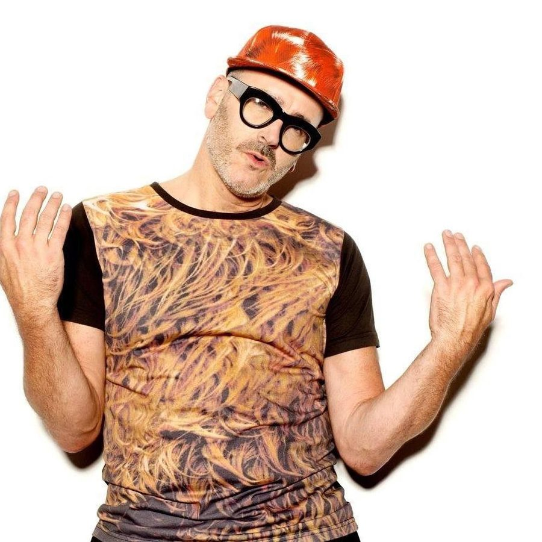

Larry Tee [Audio]: Electro spokesperson


STREAMING AUDIO INTERVIEW
He’s credited with having helped launch the careers of Fischerspooner, Peaches, the Scissor Sisters and – bizarrely – RuPaul. He’s one of the most revered identities on the NYC club scene. He coined the term ‘electroclash’, and he’s notoriously outspoken on all manner of topics pertaining to dance music. He is Larry Tee, and he’s heading back to Australia in November! Listen in as Angus Paterson speaks with the legend of New York prior to his return down under.
Larry Tee hits Oz in November:
Mon Nov 5th – Electrorama at Prince Bandroom, Melbourne (w/ Para One)
Sat Nov 10th – Oxford Arts Factory, Sydney (w/ Ajax)
Check this classic clip of Larry Tee performing (miming?) ‘Outta Space’ with La Palace de Beaute. Recorded live in Larry’s bedroom, 5 Ninth Avenue, NYC: